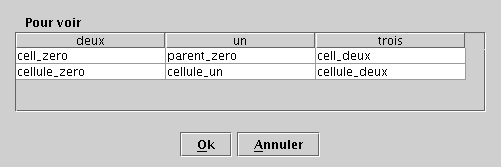

Reflechir aux actions.
Action ( ActionEvent e ) est tres generic, c'est pas facile de savoir
d'où ca vient... Quoique. Et il faut les associer a des Component. Les
Components peuvent-ils etre traversables aux actions?
Faire un DialogEditEnregistrement qui permet de choisir/afficher le parent et aussi de modifier les champs.
Un DialogGetEnregistrement could directly use a JTableData without having
to build its own... Presently, it builds its own.
Pas joli, mais pour rechercher le parent d'un enregistrement, on passera
par un DialogGetEnregistrement (alors qu'on peut aussi passer par un combo
box). Avantages des options
DialogGetEnregistrement : 